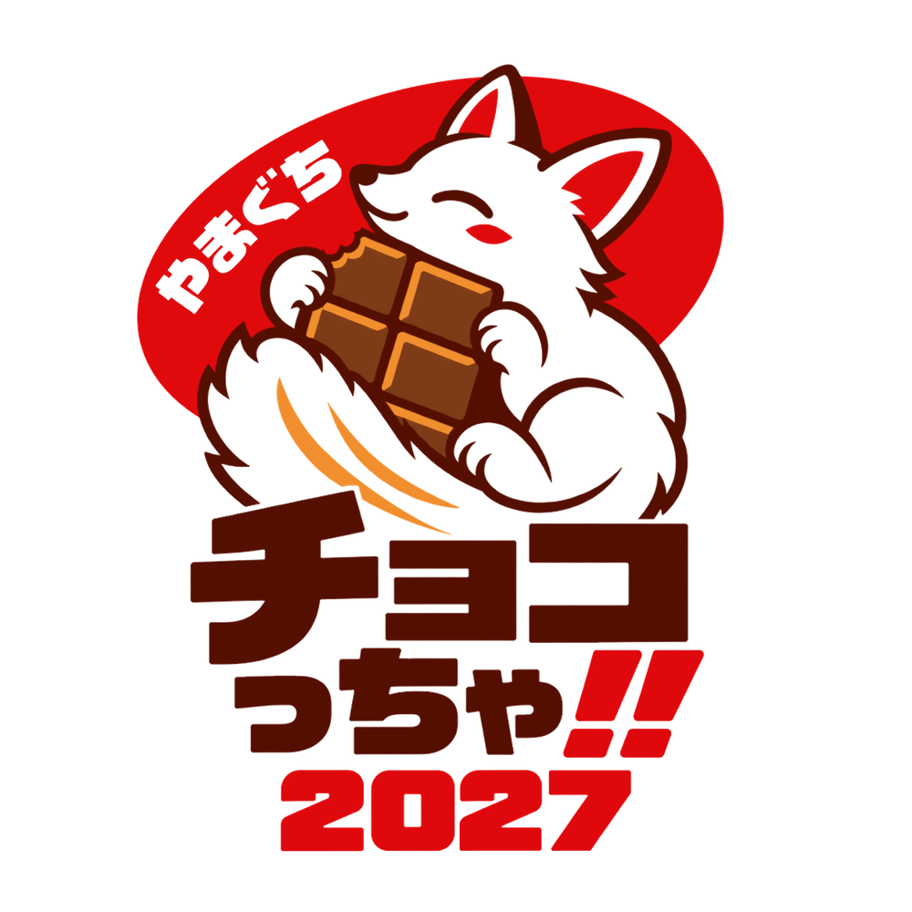

やまぐちチョコっちゃ‼フェスタ 2027
バレンタインって、
こんなに楽しい。
ひとりでも、友達や家族とでも。
知らなかった味やお店、楽しみ方に出会う一日。
十人十色のバレンタイン
開催予定日まであと--日
現在、開催に向けて会場・内容を調整しています。正式な開催情報は、決まり次第このページでお知らせします。商品・有料体験には別途料金がかかります。
開催概要
- 日時 予定2027年2月14日（日）10:00〜20:00
- 会場 計画中こんこんパークを中心に計画中山口市湯田温泉5-2-15
- 入場無料・出入り自由商品・有料体験には別途料金がかかります
- 主催チョコっちゃフェスタ実行委員会
会場範囲・会場内の案内図・アクセスは、確認ができた情報から順次お知らせします。
チョコっちゃ‼フェスタって？
バレンタインって、こんなに楽しい。
知らなかった味やお店、思いがけないチョコの楽しみ方に出会う一日を、学生・お店・地域のみなさんとつくります。
自分へのごほうび、誰かへの感謝、友達や家族と過ごす時間。ひとりでも、通りがかりでも、自分らしい「十人十色のバレンタイン」を見つけてみませんか。
十人十色のバレンタイン
自分へのごほうびも、誰かへの感謝も、友達や家族と過ごす時間も。それぞれの楽しみ方で過ごせる一日をめざしています。
学生・お店・地域でつくる
学生団体や地域のお店が考える「バレンタインやチョコの楽しみ方」を、商品・飾りつけ・体験などで持ち寄る場をつくります。
山口とチョコの背景
山口商工会議所は、2018年の家計調査で山口市のチョコレートなどへの支出が全国上位となったことを、地域のチョコレート企画の背景として紹介しています。私たちは、そのつながりを知り、山口のお店やチョコの新しい楽しみ方に出会う機会をつくりたいと考えています。
こんな楽しみ方を準備しています
想像しやすい例を4つ紹介します。内容は決まり次第、楽しみ方のページでお知らせします。
チョコやスイーツ、チョコに合う食事・飲み物との出会い
出店者は決まり次第このサイトで紹介します。
感謝を伝える贈り物や小物づくり
学生や地域の団体による演奏・ダンス
世界のバレンタインやチョコ文化を知る展示
検討中カラオケ大会などの参加型ステージも検討中です。出店者・内容・時間は、決まり次第お知らせします。
お知らせ・更新情報
- 公開予定
募集要項と専用申込フォームは、2026年11月11日ごろ公開予定です。準備状況により変更する場合があります。公開後、参加・申込みのページからご案内します。
- 更新
サイトの内容を更新しました。参加料金の案、申込みまでの流れ、お問い合わせ先を掲載しています。